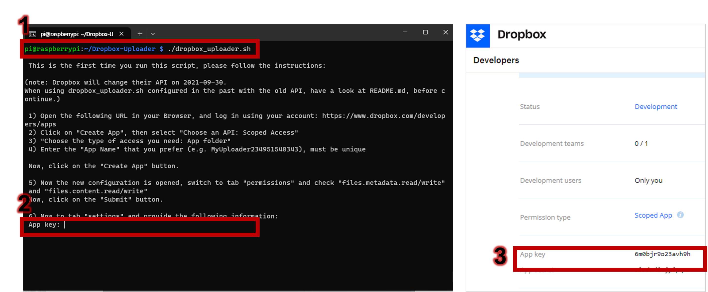

2.3. Installation Steps
2.3.1. Initiating Your Raspberry Pi
Step 1: Installing the Pi Operating System on the SD Card
1. Format your SD card: After inserting an SD card into your laptop, launch the Raspberry Pi Imager and select the Format SD Card option to prepare your SD card for the installation.
2. Flash the OS onto your SD card: Select the appropriate version of OS and your SD card storage. Before initiating the writing process, make sure to enable ssh and set the username and password as ‘pi’ and ‘raspberry’, respectively, in the settings.
The default username and password are ‘pi’ and ‘raspberry’ respectively for Raspberry Pi OS. However, for security reasons, it’s recommended to change these once your system is set up.
Step 2:
3. Connecting the Pi to Your Laptop: Inser
Step 2: Enabling Internet Connection Sharing
On your laptop, navigate to the network settings and enable the Internet Connection Sharing option. This will allow your laptop, once connected to the internet, to share its internet connection with your Raspberry Pi via an Ethernet cable.
Step 3: Connecting the Pi to Your Laptop
Use an Ethernet cable to connect your Pi to your laptop.

Step 4: Accessing the Pi via SSH
On a Windows 10 or 11 PC, you can leverage PowerShell to SSH into your Raspberry Pi.
Prerequisite: SSH should have been enabled during the Pi OS installation process (refer to Step 1).
Open Command Prompt: You can access the Command Prompt by pressing
Ctrl + R, typingcmd, and hittingEnter. Alternatively, you can open it by pressingCtrl + Shift + P.Access Your Raspberry Pi: To establish an SSH connection with your Raspberry Pi, enter the following command:
ssh pi@raspberrypi.Enter Password: By default, the username is ‘pi’ and the password is ‘raspberry’. Enter this default password when prompted.
Step 5: Verifying Your Raspberry Pi’s Internet Connectivity
To ensure your Raspberry Pi is connected to the internet, use the ping command followed by the IP address of a well-known site. Ping Google’s Public DNS Server by typing ping 8.8.8.8 and press enter. If the Pi is connected to the internet, you will see lines starting with ‘64 bytes from 8.8.8.8’ and a summary of the ping at the end.
If you’re connected to a network with enhanced security (like a university network), you may need to register your Raspberry Pi’s MAC address on a separate website before you can establish a PuTTY connection. Consult your network administrator or IT support for the specific procedures of your network.

Step 6: Important Additional Considerations
If you have multiple Raspberry Pi devices connected to your network and wish to SSH into a specific one, you can directly enter its IP address as the hostname in PuTTY. Here’s how you can identify the IP address of a particular Raspberry Pi:
- Open Command Prompt: Press the Windows key and type cmd. Press Enter to open the command prompt.
- List Network Devices: Type
arp -aand press Enter to list all devices connected to your network. - Identify the Pi’s IP Address: Find the IP address of your Raspberry Pi by checking the physical addresses in the list. Raspberry Pi devices have MAC addresses that start with either
B8:27:EB:xx:xx:xxorDC:A6:32:xx:xx:xx.
2.3.2. Setting your Pi as a sensor
Step 1: Update Your Raspberry Pi OS
The first thing you should do is update your Raspberry Pi’s operating system (OS) to the latest version. Open a terminal window and type the following commands:
sudo apt-get update -y && sudo apt-get upgrade -yAfter your updates are finished, restart your Raspberry Pi with this command:
sudo rebootThe sudo keyword means superuser do in Linux systems, analogous to Run As Administrator in Windows. The -y flag automatically affirms any prompts during the update process. The apt-get update command refreshes the available packages and their versions, while apt-get upgrade installs the latest versions.
Step 2: Configure the network settings
This step ensures your Pi can synchronize its system time with the internet at boot. Unlike your laptop, the Raspberry Pi does not have a real-time clock to keep track of the time when it’s not powered on (more details here). This means that your Pi needs to fetch the current time from the internet when it boots.
Here’s how to configure the setting:
1. Setting your mobile’s hotspot: Start by setting up your hotspot, which your Raspberry Pi will use to synchronize its time.

2. Edit the Pi’s network configuration: Access the network configuration info by typing this commend:
sudo nano /etc/wpa_supplicant/wpa_supplicant.conf 3. Add your hotspot information: Go to the bottom of the file and add this information below (to me, juhyeon9087 for both SSID and password of my mobile phone hotspot).
country=GB
network={
ssid="juhyeon9087"
psk="juhyeon9087"
key_mgmt=WPA-PSK
}
4. Close the terminal: After modifying the Wi-Fi connection details, press Ctrl + X and then press Y followed by Enter to save the changes. After rebooting your Raspberry Pi, the changes should take effect.
Step 3: Turn your Pi into a file server
This process enables the effortless sharing of files between a Raspberry Pi and other devices, such as laptops and PCs. Samba, an open-source secure network file sharing system, facilitates this transfer. By activating Samba, files can be easily transferred from or to a laptop within your network to a Raspberry Pi, via a direct Ethernet connection.
1. Install Samba: Type the following command in your terminal to install Samba.
sudo apt-get install samba samba-common-bin -y2. Modify the Samba Config File: Share the folder of your Pi by modifying the Samba config file using the following command:
sudo nano /etc/samba/smb.conf3. Edit the File: Jump to the end of the file by pressing Ctrl + w and Ctrl + v and type this:
[share]
path = /home/pi
writeable=Yes
create mast=0777
directory mast=0777
public=no
Save it by pressing Ctrl + x then y followed by Enter.
4. Set up a Samba User: Set up a user for our Samba share on your Pi by typing this command:
sudo smbpasswd -a piAfterwards, enter the password twice as prompted by the command. My password is raspberry.
5. Restart Samba Services: Restart the Samba services to make the changes effective.
sudo service smbd restart
sudo service nmbd restart6. Access the Pi directory: Open the File Explorer (press Win + E), add the address raspberrypi/pi and then, type the Pi’s name and password as the network credentials.
7. Create and check the test file test file: Make a text file on directory of your Pi by typing the following command.
sudo nano test.txtAfter typing anything (e.g., ‘gg’) in the file press Ctrl + x then y followed by Enter. Then, you can see the file in your laptop.
Step 4: Configure Cloud Storage Access on Your Pi
This step will guide you on how to equip your Raspberry Pi to send data to your cloud storage. This functionality can prove beneficial in scenarios where you need to verify the files transmitted by your Pi during its setup process.
For instance, when installing a sensor, determining the remaining storage on the sensor’s SD card can be a challenge. To address this, you can create a file that includes details about the available storage space and configure your Pi to transmit this file to your cloud storage upon booting. This way, you can inspect this file on your mobile device during the installation phase.
1. Create a Dropbox App: We’ll utilize Dropbox as our cloud storage service provider. Create your app on Dropbox developers .


2. Change the Permission: Alter the setting to allow your app to view and manage files and folders. I’ve selected all options in the permission settings.

3. Install Necessary Packages: Ensure that the curl and git packages are installed by typing the following command:
sudo apt install curl git4. Install the Dropbox Uploader: Clone the Dropbox Uploader script on your Pi by typing the following command.
git clone https://github.com/andreafabrizi/Dropbox-Uploader.git5. Execute the Uploader Script: Navigate to the newly cloned folder and grant the script executable permission by typing the following command.
cd Dropbox-Uploadersudo chmod +x dropbox_uploader.shYou can learn basic Linux commands on sites like this .
6. Link Your Account to the Uploader: Copy and paste your App Key and App Secret into the terminal.

7. Grant Your App Permissions on the Pi: Copy and paste the URL into the web browser. Click ‘Continue’ to grant the permissions.

8. Test the Dropbox Uploader App: Use the upload function to send a ‘README.md’ file to your Dropbox cloud storage. Before executing the following command, the file was empty, but after the command, the file was sent.
./dropbox_uploader.sh upload README.md /2.3.3. Test your Pi
Step 1: Test WiFi adapter
This can be used to test a monitor mode on the WiFi adapter, allowing collecting WiFi packets.
1. Install aircrack pcakage: Download the package by typing this commend:
sudo apt-get install -y aircrack-ng2. Check the status of wireless interface: Get the list of wireless interface in your Pi by typing this commend:
airmon-ngBefore inserting the WiFi adaopter, only internal wireless interface on your Pi is found.

With your WiFi adatoper, addtional wireelss interface you can see that.


3. Change the monitor mode: Change the adapter mode to monitor mode by following this command:
airmon-ng start wlan14. Excuete monitor mode: Collect the WiFi packets by following this command:
airodump-ng wlan1mon